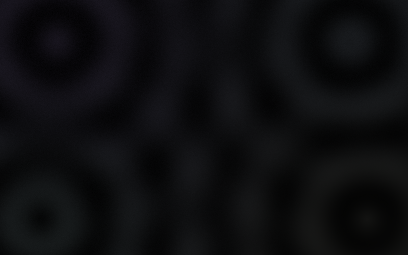
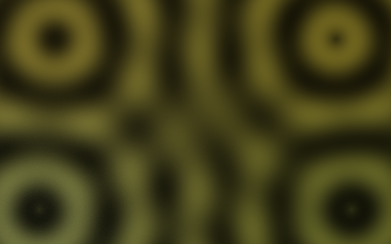

Same person, same 4-sensor Muse headband, no drawing added

EYES OPEN
Dim, cool, restless
no strong rhythm above your own baseline

EYES CLOSED
Glows gold
the 10 Hz alpha wave rises and paints it
How: each sensor sits where it is on the head (forehead top, ears bottom).
Its strength sets brightness, its rhythm sets colour (slow red, alpha gold, fast blue),
its wave pushes the rings, muscle buzz adds grain.
Can you tell eyes-closed from the picture?
50% coin flip
74%
68%
89%
Raw brain imagespectrogram
Light aloneno calibration
Light + 60 s calibration112 of 126 pairs
126 pairs of 10 s eyes-open vs 10 s eyes-closed clips from public Muse 2 sessions (HEROIC). Judge = a computer counting gold light; the human blind test is next.
A cheap headband can paint a picture you can read: with 60 s of your own calibration, eyes closed turns the light gold 89% of the time.